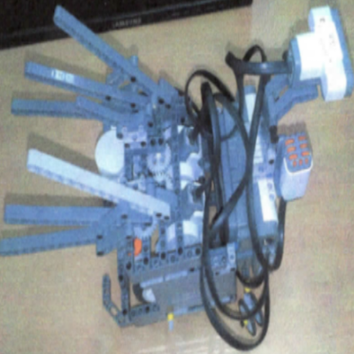
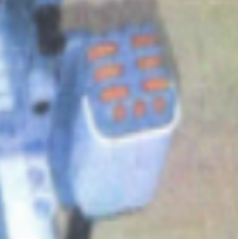

実装機能
|  |
移動する機能 普段は前進しますが、壁に近づいたり音を感知した場合は、後進後に右折します。 |

|
距離を感知する機能 距離検出センサーで壁に近づくかどうかを検出します。 |
|  |
音を感知する機能 音検出センサーで大きな音が聞こえるかどうかを検出します。 |

|
翼を振る機能 後退後右折すると翼を振りながら破断です。 |
背景と目的
プログラミングクラスにRobotCチームプロジェクトがありました。 創造的なロボットを作って人々にサービスを提供するために、ロボット工学者になることに備えて私たちだけのロボットを製作することになりました。
プログラミングクラスにRobotCチームプロジェクトがありました。 創造的なロボットを作って人々にサービスを提供するために、ロボット工学者になることに備えて私たちだけのロボットを製作することになりました。
学んだこと
- モーター、距離感知センサー、音感知センサーを活用する方法を学びました。
進行手順
- 先生が与えた組み立て説明書を見て、ロボットを組み立てました。
- ロボットの機能を見てどの機能を追加するのか悩んでいるが、音を感知すると翼を振る機能を追加することにしました。 そのため、音検出センサーを追加しました。
- 先生がくださった印刷物にモーター操縦の例がありましたが、この例を修正して音や距離を感知すると、モーターを制御して翼を振るようにしました。
- このようにして目的のプログラムを実装できました。
担当した役割と最も努力したこと
プログラム実装 総括担当および工作鳥の動作原理をRobotCで実装
プログラム実装 総括担当および工作鳥の動作原理をRobotCで実装
全体構造

使用技術
RobotC
RobotC
開発環境
RobotC
RobotC
追加の説明
- 2012年、Gunpoe Business High School e-Digital Contentとプロジェクト発表会に出品して優秀賞を受賞しました。